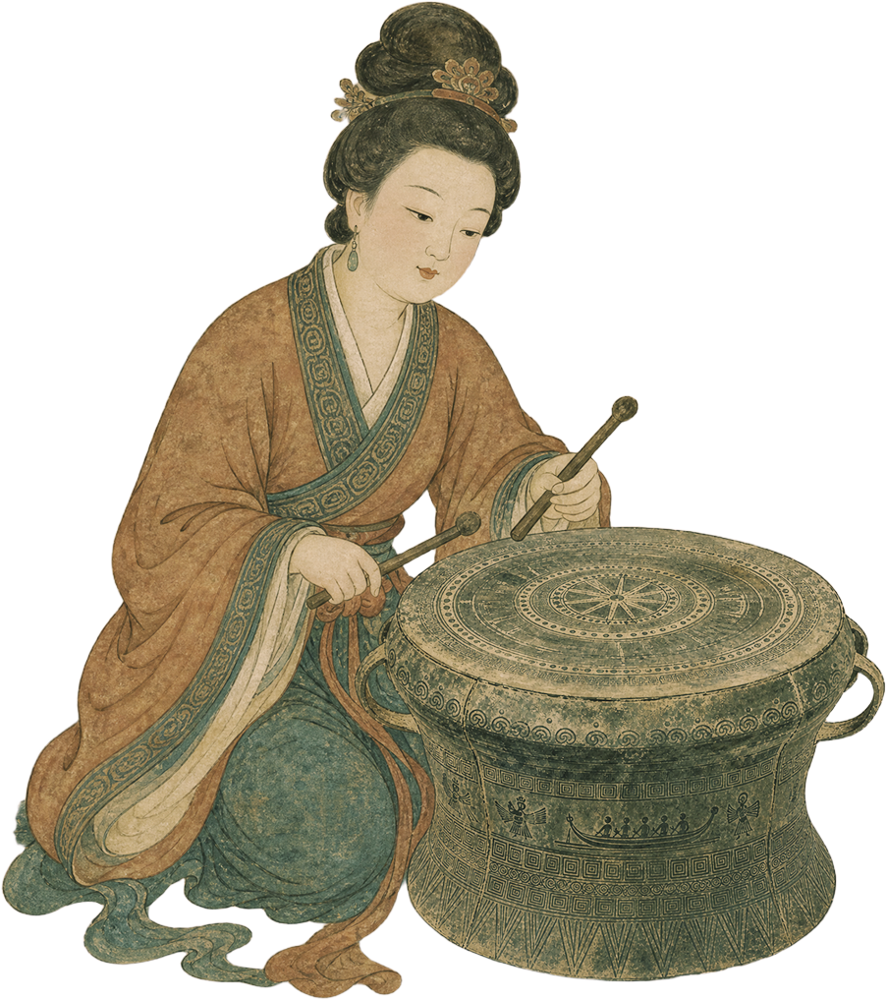

Observing Phenomena · Evolution
观象·演变

秦朝
直项初现
秦朝时期，直项琵琶作为琵琶的雏形开始出现。当时琵琶为直柄圆形共鸣箱，是早期弹拨乐器的代表形式。
"批把"一词源于当时演奏方式，"批"为向前弹，"把"为向后挑，后因音同而演变为"琵琶"二字。这一时期的琵琶主要用于马上演奏，是军事音乐的重要组成部分，为后来琵琶的发展奠定了基础。

秦代军事场景，士兵骑马持琵琶进行演奏
Observing Phenomena · Evolution
观象·演变

南北朝
曲项传入
这是琵琶史上第一次重大基因注入。林谦三《东亚乐器考》：明确指出曲项琵琶发源于波斯，经中亚、龟兹传入，北朝时已成燕乐主力乐器。
其形制为曲项、梨形音箱、四弦，用拨子横抱弹奏，音量大、音色铿锵，与汉地原有的直项圆箱“秦汉子”形成截然不同的系统。北朝宫廷将其奉为燕乐核心，琵琶由此从边疆自娱乐器跃升为上层社会的身份象征。

汉代画像石中的坐弹琵琶演奏图
Observing Phenomena · Evolution
观象·演变

唐代
横抱高峰
唐代是琵琶发展的黄金时期，上至宫廷乐队，下至民间演奏皆有琵琶身影。当时琵琶以横抱方式弹奏，在敦煌壁画中可见大量琵琶演奏图像。
曲项琵琶从西域经丝绸之路传入，成为梨形音箱、曲颈、四弦的典型形制，在唐代燕乐中占据核心地位。白居易《琵琶行》"千呼万唤始出来，犹抱琵琶半遮面"生动描绘了唐代琵琶演奏场景。

敦煌莫高窟第112窟、221窟、44窟琵琶演奏壁画
Observing Phenomena · Evolution
观象·演变
明清
竖抱定型
这是最关键的技术过渡期。明代时，竖抱弹奏已基本形成。
演奏方式也从拨子改为直接用手指弹奏，这使得左手在琴颈上的活动更自如，为技术的复杂化奠定了基础。虽然当时部分福建南音琵琶至今仍保留横抱遗风，但竖抱已是主流。

明清画作琵琶独奏